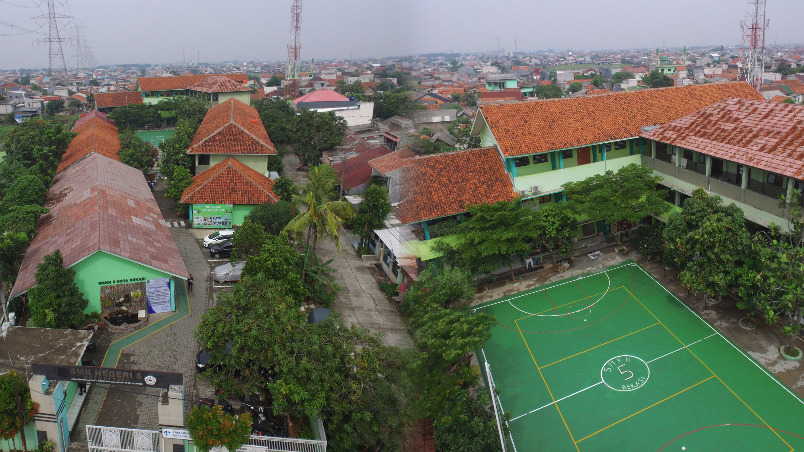
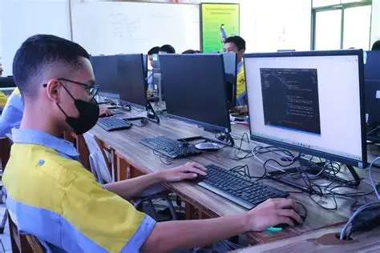
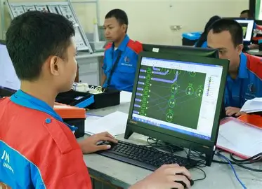
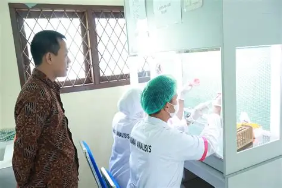
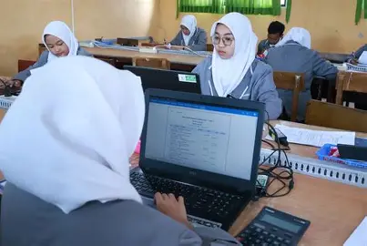

Mewujudkan Generasi Terampil, Mandiri, dan Berakhlak Mulia

SMKN 5 Kota Bekasi adalah sekolah menengah kejuruan yang berdedikasi untuk mencetak tenaga kerja profesional dan siap pakai di bidang teknologi, rekayasa, kimia, dan ekonomi kreatif. Kami berkomitmen memberikan pendidikan keahlian berkualitas tinggi bagi para siswa.

Pengembangan Perangkat Lunak dan Gim: Mempelajari pemrograman komputer, pembuatan website, aplikasi mobile, dan pengembangan gim.

Teknik Elektronika: Fokus pada penguasaan sistem kelistrikan, komponen elektronika, robotika, dan perangkat keras pintar.

Kimia Analisis: Mempelajari teknik analisis laboratorium kimia, pengujian sampel, serta kontrol kualitas industri.

Layanan Perbankan: Mempelajari pengelolaan administrasi keuangan, prosedur transaksi perbankan, dan pelayanan nasabah.
Alamat:
Jl. Perum Villa Indah Permai No.RT 009/033 Blok E27, RT.009/RW.033, Tlk. Pucung, Kec. Bekasi Utara, Kota Bks, Jawa Barat 17121
Email:
info@smknegeri5bekasi.sch.id
Tujuan:
untuk membangkitkan potensi calon siswa/siswi agar bisa bersaing menjadi siswa/siswi SMKN 5 KOTA BEKASI